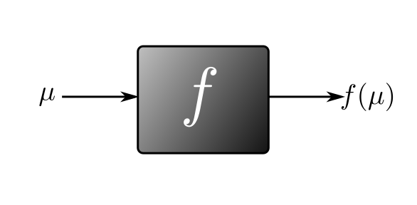
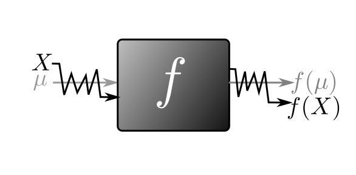
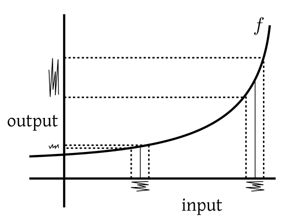
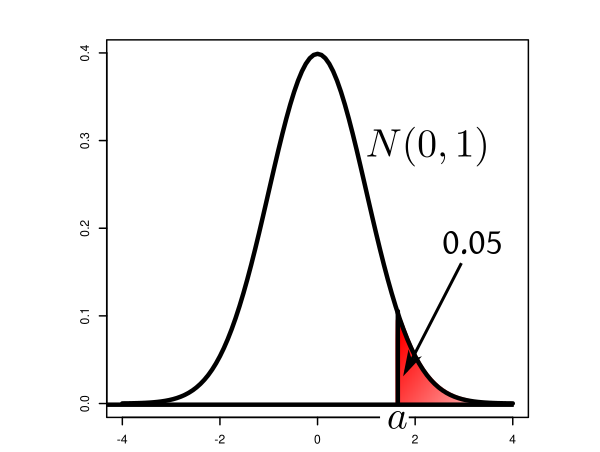
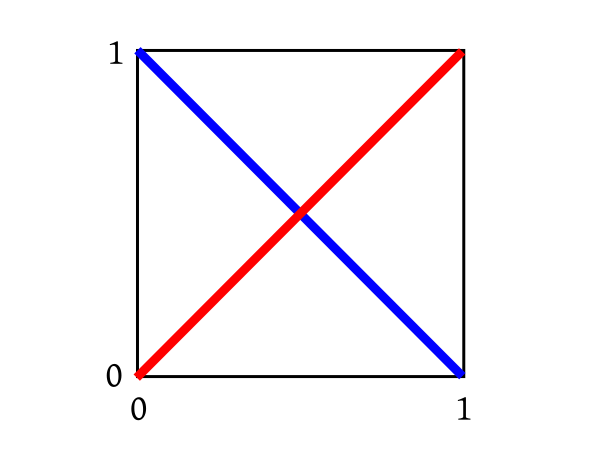

We have seen that there are different modes of convergence for random variables. As long as we are working within the same
mode, things are more or less like what we learn in real analysis. But things may get complicated if we try to mix
different modes of convergence in the same statement.
EXAMPLE 1: If $X_n\rightarrowA X$ and
$Y_n\rightarrowP Y$, then what can we say about the convergence of
$X_n+Y_n$?
SOLUTION:
One technique is to use the strength hierarchy of the different modes:
Here, for instance, we know that
a.s. convergence is stronger than convergence in probability, and so we can reduce the given condition to the weakest mode
involved: $X_n\rightarrowP X$ and $Y_n\rightarrowP Y$, and so by using property of convergence in probability, we can say $X_n+Y_n\rightarrowP X+Y.$
■
A particularly interesting situation is when $X_n\rightarrowD X$ and $Y_n\rightarrowP Y,$ and we are interested in the limiting
behaviour of $X_n+Y_n.$ Here the weakest mode involved in convergence in distribution, and so we can reduce the given
statement to: $X_n\rightarrowD X$ and $Y_n\rightarrowD Y.$ But, unfortunately, convergence in distribution does not always
respect addition. Indeed, one can get counterexamples (see this problem
in the problem set below)
where $X_n+Y_n$ does not converge to
$X+Y$ in distribution.
However, the following theorem comes to our help in a special case.
Proof:
The proof is somewhat technical in nature, and will be skipped.
[QED]
EXERCISE 3: Let $X_n\rightarrowD N(0,1)$, $Y_n\rightarrowP 5$ and $Z_n\rightarrowP 4$ with $z_n > 0.$ Then what is the
limiting distribution of $\frac{X_n+Y_n}{\sqrt {Z_n}}?$
EXERCISE 4: Suppose that $\sqrt n(X_n-\theta)\rightarrowD Z$ and $Y_n\rightarrowP a.$ Show that $\sqrt n(X_nY_n-a\theta)\rightarrowD aZ.$
EXERCISE 5: Let $T_n$ be a consistent estimator of $\theta,$ and let $S_n$ be a
consistent[?]
"S_n consistent estimator of $\sigma^2$ " means $S_n\rightarrowP
\sigma^2$
estimator of
$\sigma^2.$ Show
that the Studentized statistic
$\frac{T_n-\theta}{\sqrt{S_n}}$ has the the same asymptotic distribution as
$\frac{T_n-\theta}{\sigma},$ whenever an asymptotic distribution exists.
EXERCISE 6: Let $X_n\rightarrowD X$ and $X_n+Y_n\rightarrowD X+1.$ Does this imply that $Y_n\rightarrowP 1?$
Suppose we have a differentiable function $f:{\mathbb R}\rightarrow{\mathbb R}$ which we visualise as a blackbox.

Here the input $\mu$ is deterministic, and so is the output. Now suppose that the input a slightly jitterred version
of $\mu:$

Now the input is random, and so is the output. But if $X$ is pretty close to $\mu,$ then can we expect $f(X)$
to remain pretty close to $f(\mu)$? Yes, since $f$ is continuous. Since there is
jitter in the input, there may be jitter in the output. Which aspect of
$f$ would control the amount of output jitter (if the level of input jitter is unchanged)?

It should not be difficult to see that the derivative of $f$ controls this. Higher the
derivative (in absolute value), the more jittery the output.
The following theorem takes this one step further.
EXERCISE 7: Suppose that $\sqrt n(S_n^2-\sigma^2)\rightarrowD N(0,\theta^2).$ Show that $\sqrt n(S_n-\sigma)\rightarrowD N\left(0,\frac{\theta^2}{4 \sigma^2}\right).$
EXERCISE 8: If $\sqrt n(\bar X_n-\mu)\rightarrowD N(0,1),$ show that $\sqrt n(\log \bar X_n-\log \mu)\rightarrowD N(0,\frac{1}{\mu^2}).$
EXERCISE 9: If $\sqrt n(T_n-\theta)\rightarrowD N(0,\sigma^2)$ for some $\theta\neq 0,$ then show that
$\sqrt n\left( \frac{1}{T_n}-\frac 1\theta\right) \rightarrowD N\left(0,\frac{\sigma^2}{\theta^2}\right).$
EXERCISE 10: Let $X_n$ be asymptotically $N\left(\mu,\frac{\sigma^2}{n}\right).$ What is the asymptotic distribution of $\frac{X_n}{1+X_n}?$
EXERCISE 11:
We toss a coin with unknown $P(H)=p\in (0,1).$ Let $X_n = $ proportion of heads. Find an asymptotic distribution
for the odds ratio $\frac{X_n}{1-X_n}.$
EXERCISE 12: $T_n$ is an estimator for a parameter $\theta$ with asymptotic distribution
$N\left(\theta, \frac{\sigma^2}{n}\right).$ Use deltan method to obtain an approximate 95% confidene interval for
$e^\theta.$
EXAMPLE 2: Suppose $X\sim N(\mu, \sigma^2),$ where $\sigma^2$ is known. How can you obtain
the 90% confidence interval for $\mu$ based on $X$?
SOLUTION:
We have
$$Z = \frac{X-\mu}{\sigma}\sim N(0,1),$$
and so taking $a = \phi ^{-1}(0.95),$ we have
$$P(-a < Z < a) = 0.90,$$

or
$$P\left(-a < \frac{X-\mu}{\sigma} < a \right) = 0.90.$$
In terms of $\mu,$ this is becomes
$$P(X-a \sigma < \mu < X + a \sigma) = 0.90.$$
So $(X-a \sigma,X + a \sigma)$ is a 90%
confidence interval for $\mu.$
■
This example is a rather textbookish one. Often we encounter a similar situation where the
normality comes from CLT. There we usually have a further complication as shown in the next example.
EXAMPLE 3:
We have a coin with unknown probability $p$ of head. We toss it $n=$1000 times to get $X$ heads. We want to get a
90% confidence interval for it. How to go about it?
SOLUTION:
We can use the CLT to conclude $\frac Xn\simA N(p, \frac{p(1-p)}{n}).$
But the variance itself is a function of the unknown parameter to be estimated. Thus, even though we
can write
$$P\left( \frac Xn-a\sqrt{\frac{p(1-p)}{n}} < p < \frac Xn+a\sqrt{\frac{p(1-p)}{n}} \right)\approx 0.90,$$
we cannot propose $\left( \frac Xn-a\sqrt{\frac{p(1-p)}{n}},~\frac Xn+a\sqrt{\frac{p(1-p)}{n}} \right)$ as a confidence interval for
$p$, since it involves $p$ itself!
■
In general, we often have an estimator $T_n$ for some parameter $\mu$ such that
$$\frac{\sqrt n(T_n-\mu)}{\sigma(\mu)}\rightarrow N(0,1),$$
for some known function $\sigma(\cdot).$
In such a situation we can sometimes "stabilize the variance", i.e., transform the data in a one-one way to make the
variance free of the unknown parameter.
Proof:By delta method, we have
$\frac{\sqrt{n}(f(T_n)-f(\mu))}{\sigma(\mu)|f'(\mu)|}\rightarrowD$ the same distribution.
Now, since $f$ is strictly increasing, hence $f'(\mu) > 0.$
Also
$\sigma(\mu)f'(\mu) = 1,$ and so the theorem follows.
[QED]
EXAMPLE 4: Find a variance stabilizing transform for the last example. Hence obtain a 90% confidence
interval for $p$ when $X = 352$ and $n=1000.$
SOLUTION:
There $E(\frac Xn) = p$ and $V(\frac Xn) = \frac{p(1-p)}{n}.$ So we need $f'(p) = \sqrt{\frac{n}{p(1-p)}}.$
Solving we have
$$f(p) = \int \sqrt{\frac{n}{p(1-p)}}\, dp = \cdots = \sqrt{n}\sin ^{-1} (2p-1).$$
Using this transform we can say $\sqrt{n}(f(X/n)-f(p))\rightarrowD N(0,1).$
Hence with $a = \Phi ^{-1}(0.95)$ we have
$$P\left(-a < \sqrt{n}(f(X/n)-f(p)) < a\right) \approx 0.90,$$
or
$$P\left(f(X/n)-\frac{a}{\sqrt n} < f(p) < f(X/n)+\frac{a}{\sqrt n}\right) \approx 0.90.$$
This gives us the following confidence interval for $f(p)$:
$$\left(f(X/n)-\frac{a}{\sqrt n},~f(X/n)+\frac{a}{\sqrt n}\right) = ( -9.554731, -9.450701).$$
Since $f$ is a strictly increasing function, we can obtain confidence interval for $p$
by applying $f ^{-1}$ to this: $(0.8512146, 0.8527858).$
■
This is a family of variance stabilizing transforms that have an extra benefit: they also correct
skewness in data.
Notice that for each $\lambda\in{\mathbb R}$
you have one transform. This exercise in the problem set below will give
one condition under which the Box=Cox transform emerges as a variance-stabilizing transform.
But arguably its "skew-correcting role" is more helpful in practice. Many statistical methods are designed with normal data
in mind. But often in practice the sample histogram of a variable shows a marked amount of
skewness. Then we can play with $\lambda$ to come up with an optimal value for which the
transformed data is nearly symmetric.
While mathematical methods have been devised to ascertain such an optimal value, a brute-force
visual inspection technique is
often a simpler alternative. You may have a taste of this with simulated data using this
interactive demo. There is a slider to control the value of $\lambda.$ The initial value is $\lambda=1,$
which basically gives the shape of the histogram of the raw data. It is highly skewed. Play with the slider, and see how
the histogram changes shape. Try to find $\lambda$ for which the histogram is nearly symmetric.
To understand what we are about to discuss now, we need to understand what is meant by convergence in distribution for random vectors.
A random vector, you will recall, is just a bunch of random variables (all defined on the same
probability space) stacked together, e.g., $\left[\begin{array}{ccccccccccc}X\\Y
\end{array}\right]$ or $\left[\begin{array}{ccccccccccc}X_1\\X_2\\X_3
\end{array}\right]$. The distribution
of a random vector $\v X = (X_1,...,X_d)'$ is defined as $F:{\mathbb R}^d\rightarrow[0,1],$ where
$$F(x_1,...,x_d) = P(X_1\leq x_1,...X_d\leq x_d).$$
Now let $(\v X_n)$ be a sequence of random vectors. Also let $\v X$ be some random vector. Then we say $\v X_n\rightarrowD \v X$
if the distribution function of $\v X_n$ converges to the distribution function of $\v X,$ at every continuity
point of the latter. More formally, let $F_n(\cdot)$ and $F(\cdot)$ be the
distribution functions of $\v X_n$ and $\v X,$ respectively. Then we say $\v X_n\rightarrowD \v X$ if for
each continuity point $\v
a$ of $F$ we
have $F_n(\v a)\rightarrow F(\v a).$
As you might guess, working with random vectors is less fun than working with random variables. So we somehow want to reduce
working with random vectors to working with the individual components. This naturally leads to the following question.
EXAMPLE 5: Suppose that $X_n\rightarrowD X$ and $Y_n\rightarrowD Y.$ Does
this imply $(X_n,Y_n)\rightarrowD (X,Y)?$
SOLUTION:
No! As a counterexample, consider $Unif(0,1)$ probability space. Let $X_n(\omega) = Y_n(\omega) = \omega$.
Also, let $X(\omega) = \omega$ and $Y(\omega) = 1-\omega.$
Then $X_n\rightarrowD X$ and $Y_n\rightarrowD Y.$
But for the joint distribution consider the two diagonals shown below.

$(X_n,Y_n)$ has uniform distribution on the red diagonal, while $(X,Y)$ has uniform distribution on the blue
one.
■
Indeed, for $(X_n,Y_n)\rightarrowD (X,Y)$ to hold, we need every linear combination of $X_n$ and $Y_n$ to converge
in distribution to the corresponding linear combination of $X$ and $Y.$ For example,
we demand that $2X_n-3Y_n\rightarrowD 2X-3Y.$
In general we have the following theorem.
Proof:
Use characteristic function (to be covered in the next page).
[QED]
EXERCISE 17:
If $\v X_n\rightarrowD \v X$, then show that each component of $\v X_n$
converges in distribution
to the corresponding component of $\v X.$
EXERCISE 18: Prove multivariate CLT from univariate CLT using the Cramer-Wold device.
EXERCISE 19: Consider the $Unif(0,1)$ probability space. Define $X(\omega) = \left\{\begin{array}{ll}1&\text{if }w\in\left(0,\frac 12\right)\\ 0&\text{otherwise.}\end{array}\right. $
and $Y(\omega) = \left\{\begin{array}{ll}1&\text{if }w\in\left(\frac 13,\frac 23\right)\\ 0&\text{otherwise.}\end{array}\right..$ Let
$(X_1,Y_1), (X_2,Y_2),...$ be iid versions of $(X,Y).$ Find the asymptotic distribution of $(\bar X_n,\bar Y_n).$
EXERCISE 20: Let $(X_n,Y_n)$ be an iid sequence of random vectors with mean $(\mu, \nu)$ and
some (finite) covariance matrix. Find the asymptotic distribution of $(\bar X_n,\bar Y_n).$
EXERCISE 21: A (possibly biased) die is rolled $n$ times. Let $X_{i,n}$ be the proportion of
face $i.$ Find the asymptotic joint distribution of $(X_{1,n},...,X_{6,n}).$
EXERCISE 22: Prove the multivariate delta method using the Cramer-Wold device.
EXERCISE 23: Let $X_1,X_2,...$ be iid with some distribution having finite moments $E(X_1^k) =
\mu_k$ for $k=1,2,3,4.$ We are interested in the sample $CV$ of $X_1,...,X_n:$
$$CV_n = \frac{S_n}{\bar X_n},$$
where $\bar X_n$ and $S^2_n$ are the sample mean and variance of $X_1,...,X_n.$
Use the
multivariate CLT and delta
method to obtain the asymptotic
distribution of $CV_n$.
Notice that $CV_n$ is a function of $\left(\frac 1n\sum_1^n X_i, ~\frac 1n\sum_1^n
X_i^2\right).$ Use multivariate CLT to obtain an asymptotic normal distribution for this. Next,
write $CV_n$ as $g\left(\frac 1n\sum_1^n X_i,~\frac 1n\sum_1^n X_i^2\right)$, and apply multivariate delta method.